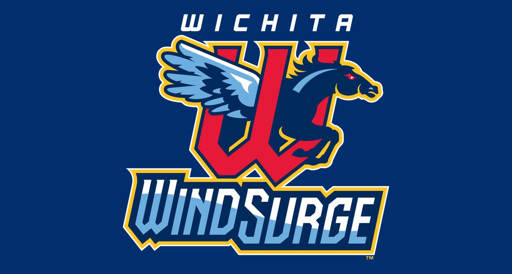
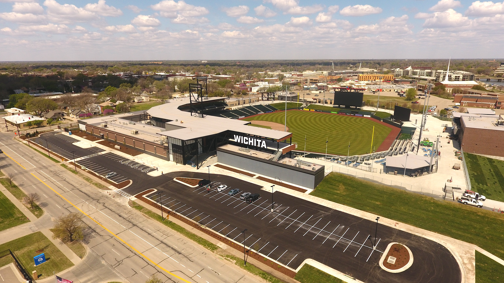

Wichita Wind Surge
The Wichita Wind Surge is an American Minor League Baseball team of the Pacific Coast League. They are the Triple-A affiliate of the Miami Marlins. Prior to 2020, the Wind Surge were located in Metaire, Lousiana playing as the New Orleas Baby Cakes.
The now Wind Surge were founded originally in 1955 as the Denver Bears. In 1984, the team name was changed to the Denver Zephyrs after the Denver Zephyr passenger train. In 1993, the MLB expanded creating the Colorado Rockies resulting in the Denver Zephyrs being relocated to New Orleans. They kept the Zephyrs name becuase of the Zephyr Roller Coaster in New Orleans until 2017 when they became the New Orleans Baby Cakes. Finally in 2020, the team relocated to Wichita. Over the course of the team's history, they have been a Triple-A affiliate for 12 different MLB teams.
The Baby Cakes were looking to relocate from New Orleans and eyed a new stadium as part of the relocation. In September 2018, Wichita announced plans to build a new $75 million stadium to host the New Orleans Baby Cakes who agreed to relocate to Wichita for the 2020 season. They will play their games at the new Riverfront Stadium replacing the former Lawrence-Dumont Stadium who was home to the Wichita Wingnuts. The $75 million stadium will seat 10,000 people and is located in dowtown Wichita. Riverfront Stadium will be home to over 70 baseball games per year and will host other events throughout the year.
Visit the official Wichita Wind Surge website to find out more information.